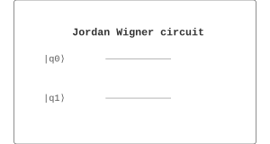

Chemistry / 化学 | 难度：高级 | 预计时间：20 分钟
Jordan-Wigner 变换将费米子算符映射到量子比特算符。
经典方法无法高效处理费米子系统
对于大系统，经典方法效率低
费米子统计使得经典模拟困难
Jordan-Wigner 变换可以在量子比特上表示费米子系统
提供指数加速
是量子化学的基础
量子化学（分子模拟）
材料科学（新材料设计）
量子物理（量子多体系统）
from quonic.chemistry import jordan_wigner
# 将费米子哈密顿量映射到量子比特
result = jordan_wigner(hamiltonian=[[1,0],[0,-1]])
print(f'Qubit Hamiltonian: {result.qubit_hamiltonian}')
print(f'Fermion Hamiltonian: {result.fermion_hamiltonian}')预期输出：
Qubit Hamiltonian: [[1,0],[0,-1]]
Fermion Hamiltonian: [[1,0],[0,-1]]
Step 1: 费米子算符
费米子产生和湮灭算符： \[\begin{equation} \{a_i, a_j^\dagger\} = \delta_{ij} \end{equation}\]
Step 2: Jordan-Wigner 变换
Jordan-Wigner 变换： \[\begin{equation} a_j^\dagger \to \frac{X_j - iY_j}{2} \otimes Z_{j-1} \end{equation}\]
Step 3: 量子比特表示
费米子哈密顿量： \[\begin{equation} H = \sum_{ij} h_{ij} a_i^\dagger a_j + \sum_{ijkl} h_{ijkl} a_i^\dagger a_j^\dagger a_k a_l \end{equation}\]
量子比特表示： \[\begin{equation} H = \sum_{ij} h_{ij} \sigma_i^+ \sigma_j^- + \sum_{ijkl} h_{ijkl} \sigma_i^+ \sigma_j^+ \sigma_k^- \sigma_l^- \end{equation}\]
Step 4: Pauli 算符
Pauli 算符： \[\begin{equation} \sigma^+ = \frac{X + iY}{2}, \quad \sigma^- = \frac{X - iY}{2} \end{equation}\]
Jordan-Wigner 变换在量子比特空间中表示费米子系统。每个费米子对应一个量子比特，费米子统计通过 Z 门实现。
from quonic.chemistry import jordan_wigner
# jordan_wigner(hamiltonian, n_qubits)
# hamiltonian: 费米子哈密顿量
# n_qubits: 量子比特数
result = jordan_wigner(
hamiltonian=[[1, 0], [0, -1]],
n_qubits=2
)
# result.qubit_hamiltonian: 量子比特哈密顿量
# result.fermion_hamiltonian: 费米子哈密顿量
# result.pauli_decomposition: Pauli 分解
print(f'Qubit Hamiltonian: {result.qubit_hamiltonian}')
print(f'Pauli decomposition: {result.pauli_decomposition}')模拟 Hubbard 模型的 Jordan-Wigner 变换：
from quonic.chemistry import jordan_wigner
import numpy as np
# 1D Hubbard 模型
# H = -t * sum(c_i^dag c_{i+1} + h.c.) + U * sum(n_i_up * n_i_down)
t = 1.0 # 跳跃积分
U = 2.0 # 库仑排斥
n_sites = 2
# 构造费米子哈密顿量
# 每个站点有自旋上和自旋下两个轨道
n_orbitals = 2 * n_sites # 4 个轨道
H_fermion = np.zeros((n_orbitals, n_orbitals))
# 跳跃项
for i in range(n_sites - 1):
# 自旋上
H_fermion[2*i, 2*(i+1)] = -t
H_fermion[2*(i+1), 2*i] = -t
# 自旋下
H_fermion[2*i+1, 2*(i+1)+1] = -t
H_fermion[2*(i+1)+1, 2*i+1] = -t
# 库仑排斥项（需要二体项）
# 简化：只考虑一体项
for i in range(n_sites):
H_fermion[2*i, 2*i] = U/2
H_fermion[2*i+1, 2*i+1] = U/2
# Jordan-Wigner 变换
result = jordan_wigner(H_fermion.tolist(), n_qubits=n_orbitals)
print(f'Fermion Hamiltonian shape: {H_fermion.shape}')
print(f'Qubit Hamiltonian shape: {np.array(result.qubit_hamiltonian).shape}')
print(f'Number of Pauli terms: {len(result.pauli_decomposition)}')
# 分析 Pauli 分解
print('\\nPauli decomposition:')
for pauli_str, coeff in result.pauli_decomposition[:5]:
print(f' {pauli_str}: {coeff:.4f}')将分子轨道哈密顿量映射到量子比特：
from quonic.chemistry import jordan_wigner, molecule_vqe
import numpy as np
# 获取 H2 分子的分子轨道哈密顿量
mol = molecule_vqe(molecule='H2', bond_length=0.74)
H_molecular = mol.molecular_hamiltonian
# Jordan-Wigner 变换
result = jordan_wigner(H_molecular, n_qubits=mol.n_qubits)
print(f'Molecular Hamiltonian shape: {np.array(H_molecular).shape}')
print(f'Qubit Hamiltonian shape: {np.array(result.qubit_hamiltonian).shape}')
# 分析 Pauli 项的物理意义
print('\\nPauli terms:')
for pauli_str, coeff in result.pauli_decomposition:
# 解释 Pauli 字符串
interpretation = []
for i, op in enumerate(pauli_str):
if op == 'X':
interpretation.append(f'q{i}: flip')
elif op == 'Y':
interpretation.append(f'q{i}: flip+phase')
elif op == 'Z':
interpretation.append(f'q{i}: phase')
elif op == 'I':
interpretation.append(f'q{i}: identity')
print(f' {pauli_str} ({coeff:.4f}): {", ".join(interpretation)}')
# 分析：最大的 Pauli 项对应最重要的物理过程
# Z 项：能量偏移
# XX, YY 项：自旋翻转相互作用
# ZZ 项：自旋-自旋耦合比较 Jordan-Wigner 和 Bravyi-Kitaev 变换：
from quonic.chemistry import jordan_wigner, bravyi_kitaev
import numpy as np
# 测试哈密顿量
H = np.array([
[2, 1, 0, 0],
[1, -1, 1, 0],
[0, 1, 0, 1],
[0, 0, 1, 2]
])
# Jordan-Wigner 变换
result_jw = jordan_wigner(H.tolist(), n_qubits=4)
# Bravyi-Kitaev 变换
result_bk = bravyi_kitaev(H.tolist(), n_qubits=4)
# 比较
print('Jordan-Wigner:')
print(f' Number of Pauli terms: {len(result_jw.pauli_decomposition)}')
print(f' Max coefficient: {max(abs(c) for _, c in result_jw.pauli_decomposition):.4f}')
print('\\nBravyi-Kitaev:')
print(f' Number of Pauli terms: {len(result_bk.pauli_decomposition)}')
print(f' Max coefficient: {max(abs(c) for _, c in result_bk.pauli_decomposition):.4f}')
# 分析：
# - Bravyi-Kitaev 通常产生更少的 Pauli 项
# - 这意味着更少的量子门
# - 但 Jordan-Wigner 更直观，更容易理解Jordan-Wigner 变换是量子化学模拟的基础。分子的电子结构可以用费米子哈密顿量描述，Jordan-Wigner 变换将费米子哈密顿量映射到量子比特哈密顿量，使得量子计算机可以模拟分子系统。这对于药物设计、催化剂设计非常重要。
Jordan-Wigner 变换可以用于计算材料的电子结构。材料的电子结构决定了材料的性质（如导电性、磁性、超导性等）。Jordan-Wigner 变换将材料的费米子哈密顿量映射到量子比特，使得量子计算机可以精确计算电子结构。
Jordan-Wigner 变换可以用于模拟量子多体系统。例如，Hubbard 模型描述了电子在晶格中的相互作用，是理解高温超导的基础。Jordan-Wigner 变换将 Hubbard 模型映射到量子比特，使得量子计算机可以模拟这些系统。
Jordan-Wigner 变换是许多量子算法的基础。例如，VQE（变分量子本征求解器）需要 Jordan-Wigner 变换来构造量子电路。量子相位估计（QPE）也需要 Jordan-Wigner 变换来准备初始态。
Jordan-Wigner 变换可以用于模拟量子多体系统。
将费米子系统映射到量子比特系统。
对于大系统，变换后的哈密顿量可能很复杂。
Jordan-Wigner 变换是最简单的变换，其他变换（如 Bravyi-Kitaev）可能更高效。
量子化学
费米子系统
量子比特
VQE
量子化学模拟
材料科学
from quonic.chemistry import jordan_wigner
result = jordan_wigner(hamiltonian=[[1,0],[0,-1]])
print(f'Qubit Hamiltonian: {result.qubit_hamiltonian}')(https://github.com/ChrisLee0721/QuoNic/blob/main/examples/jordan_wigner/jordan_wigner.py)